Explore George Town
A Brief History
George Town on Penang Island grew after British East India Company settlement in 1786 into a Straits trading port. Chinese clan houses, Indian temples, and colonial shophouses record how Malay, Chinese, and Indian communities shaped maritime commerce and street-food culture in northwest Malaysia. Street-art lanes and clan jetties extend Penang's maritime merchant quarters along the Malacca Strait.
Attractions Map
Top Sights & Activities
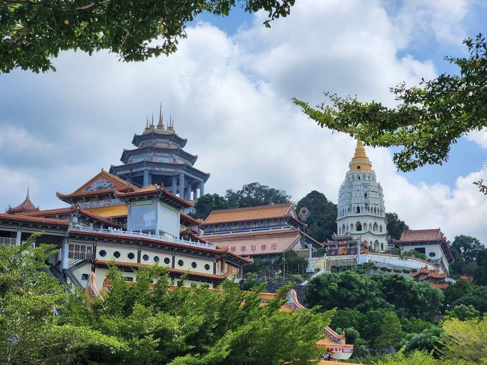
Kek Lok Si Temple
Kek Lok Si Temple, located on the White Crane Mountain in Penang, Malaysia, is the largest Chinese Buddhist temple in the country. Built in 1889, it showcases a blend of architectural styles from China, Thailand, and Myanmar. The temple complex is divided into lower, middle, and hilltop sections featuring intricate decor and numerous Buddha images. Visitors can explore various religious and cultural structures as well as beautifully landscaped gardens.
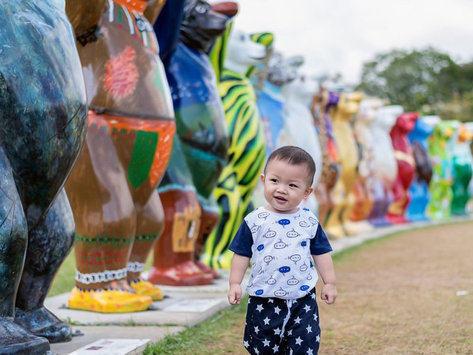
Padang Kota Lama (Esplanade)
Padang Kota Lama (Esplanade) is listed among principal sites for George Town within Malaysia. Municipal and regional heritage listings document its place in the historic centre and travellers routes through George Town. Padang Kota Lama (Esplanade) is listed among principal sites for George Town within Malaysia.
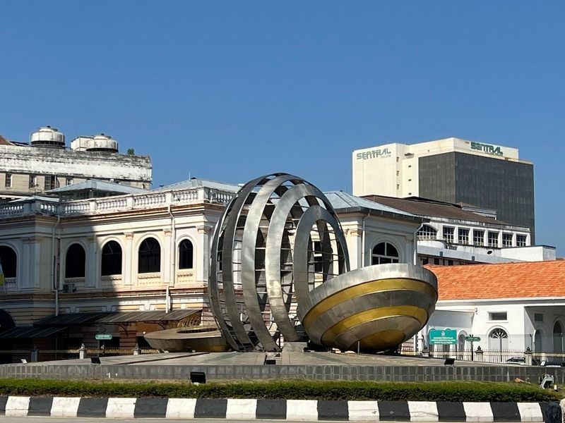
Queen Victoria Memorial Clock Tower
The Queen Victoria Memorial Clock Tower, a Moorish-style landmark commemorating Queen Victoria, is a popular spot for photos. Standing at over 230 meters tall, it offers a 360-degree view from the 60th floor, making it the tallest landmark in Penang and the sixth-tallest in Malaysia. The tower was completed in 1986 and provides views of the city, island, strait, and mainland.
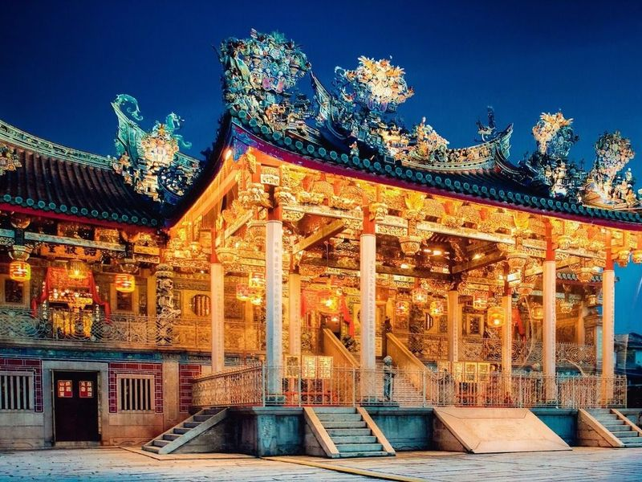
Georgetown UNESCO Historic Site
Georgetown UNESCO Historic Site is a must-visit destination in Malaysia, declared a World Heritage Site by UNESCO in 2008. The area is known for its explosion of street art and colonial architecture, offering a lovely warren of roads and alleys to explore. Visitors can spend up to a week wandering through interesting shops, bars, historic sites, parks, mosques, and temples.
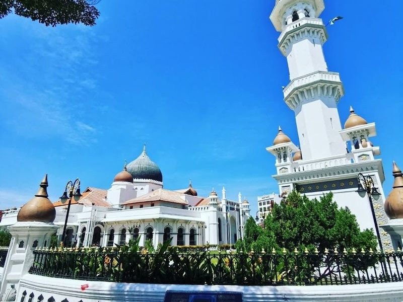
Kapitan Keling Mosque
Nestled in the heart of George Town, the Kapitan Keling Mosque stands as a testament to 19th-century architecture and cultural heritage. This magnificent mosque, with its striking whitewashed façade and Mughal-style domes, serves as a central place of worship for the South Indian Muslim community. Built in 1801 by early Indian Muslim settlers, it features an impressive minaret that calls the faithful to prayer.
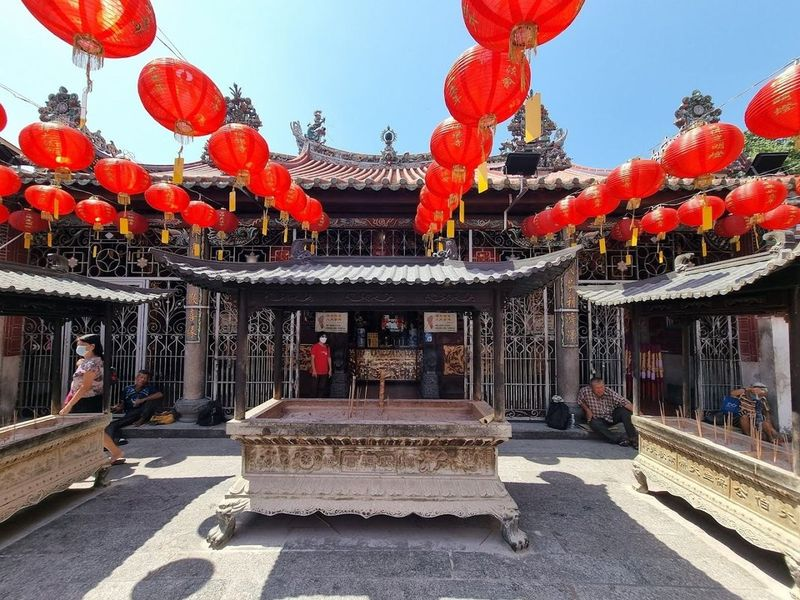
Goddess Of Mercy Temple
Goddess Of Mercy Temple, also known as Kuan Yin Teng or Kong Hock Keong, is a Taoist temple in George Town Heritage City. Dating back to 1728, it is dedicated to Guanyin, the bodhisattva and Goddess of Mercy. The temple's unique architecture reflects the different stages of development in the area.
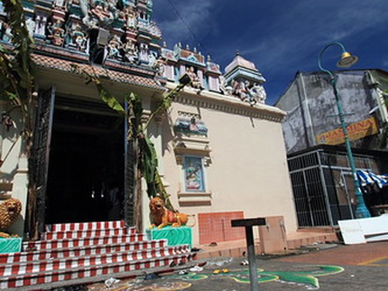
Penang Little India
Penang Little India is listed among principal sites for George Town within Malaysia. Municipal and regional heritage listings document its place in the historic centre and travellers routes through George Town. Penang Little India is listed among principal sites for George Town within Malaysia.
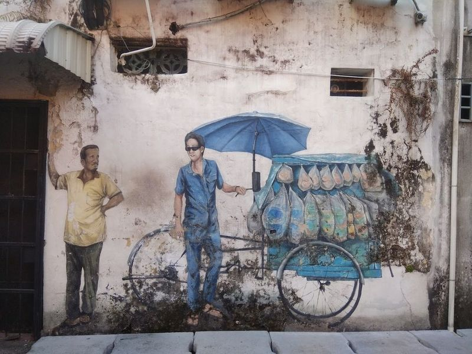
Penang Street Art
Penang Street Art is a collection of urban murals scattered throughout the UNESCO-listed historic district of George Town. These artworks depict various aspects of life and culture in Penang, adding a unique charm to the colonial buildings and diverse food scene. The street art has become a major attraction for tourists, with many flocking to the historical area to capture photos with famous murals and iron sculpture cartoons.
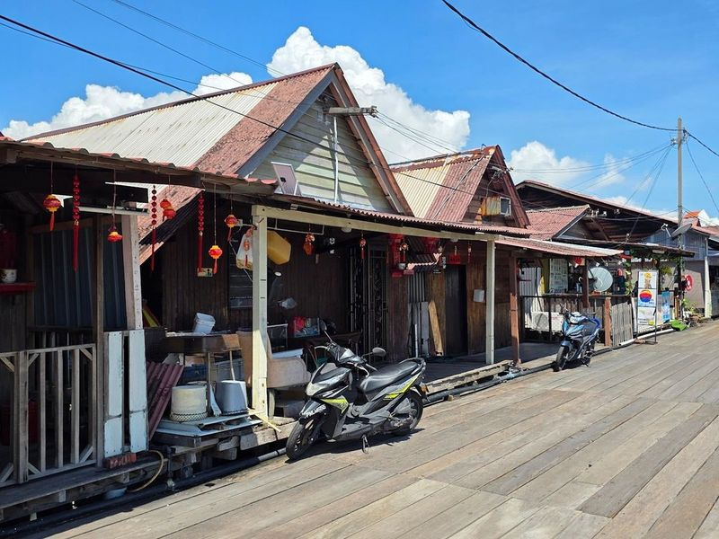
Chew Jetty
Chew Jetty is a UNESCO historic site and a traditional stilt village by the sea, dating back to the 19th century. It's one of the last Chinese settlements on Penang Island, with wooden stilt houses built along a walkway. The location offers a unique and adventurous spot for proposals, with its rustic charm and picturesque views of colorful sunsets and boats tied to the docks.
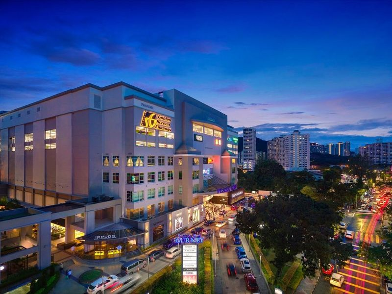
Gurney Plaza
Gurney Plaza is a modern shopping complex located in the popular Gurney Drive promenade in Penang. Situated about three kilometers northwest of Georgetown, it stands as and most prominent malls on the island. With nine floors of retail space, this destination offers an array of shops ranging from clothing and electronics to accessories. Additionally, visitors can enjoy various dining options including Cara Caro Cafe, The Sugar Tang, and MiniMelts ice cream.
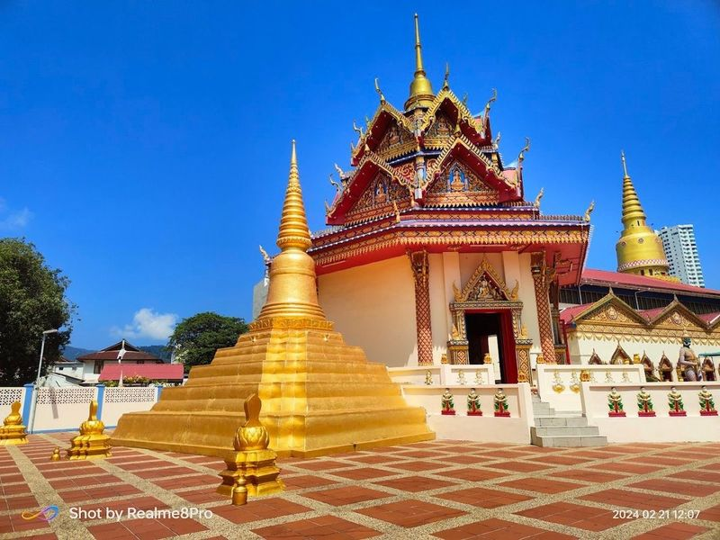
Chaiya Mangalaram Thai Buddhist Temple
The Chaiya Mangalaram Thai Buddhist Temple is a traditional Malaysian Siamese temple that is renowned for its impressive and lengthy Reclining Buddha statue, which measures 108 feet or 33 meters long. The temple also houses various statues of mythical creatures like Yaksha, along with smaller Buddha statues in different poses and Devas. One can witness the captivating mosaic dragons and other magnificent sculptures within the shrine.
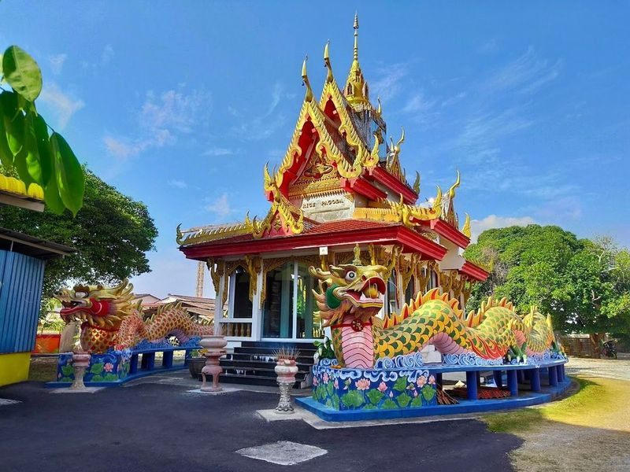
Wat Buppharam Buddhist Temple Penang
Wat Buppharam is a and spiritual Buddhist temple with colorful decorations and numerous deities to worship. Devotees from around the world visit this temple to absorb its energy, pray, and receive blessings from the monks. The warm and serene ambiance of the temple creates a peaceful atmosphere for visitors. It features Thai-style Buddha statues, captivating sculptures, and clearly numbered altars for sequential prayers.
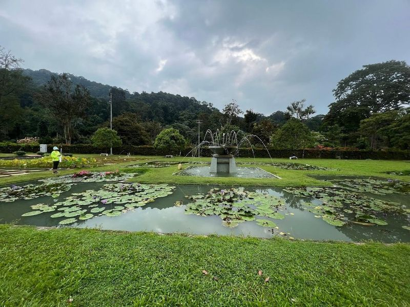
Botanical Gardens Penang
Nestled in the natural landscapes of Waterfall River Valley, Penang Botanic Gardens is a 30-hectare public park featuring a diverse range of botanical exhibits. Despite being commonly known as 'Waterfall Gardens,' there's no actual waterfall within the park. However, visitors can still enjoy exploring the extensive tropical rainforest, rare species of ferns, an herb garden, and an orchidarium.
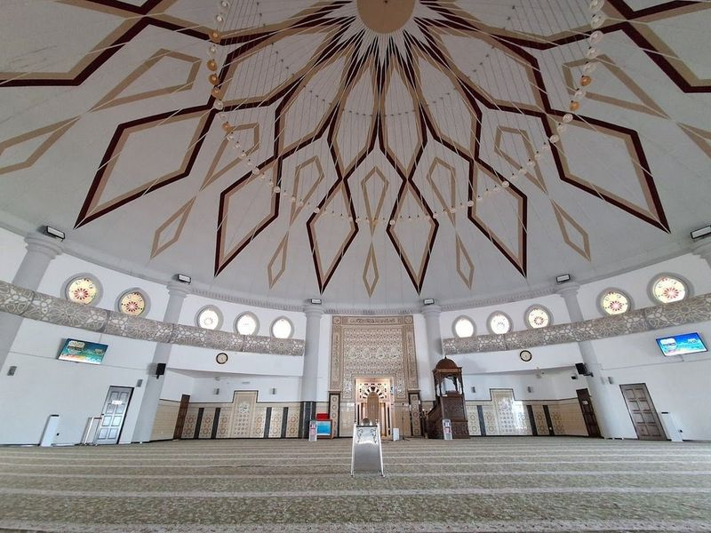
Tanjung Bunga Floating Mosque
The Floating Mosque, also known as the Tanjung Bungah Mosque, is a modern architectural marvel with Moorish motifs. Built in 2004 to replace a smaller mosque destroyed by a tsunami, it stands on stilts along Tanjung Bungah's beach. The seven-storey minaret offers panoramic views of the surrounding area. During high tide, the mosque appears to float and provides excellent photo opportunities.
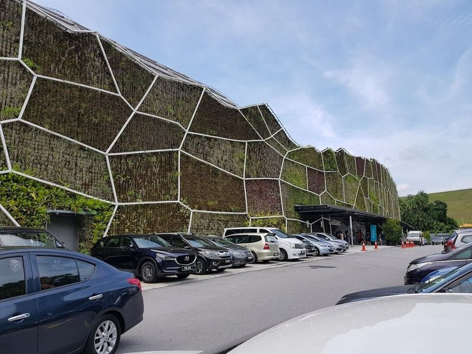
Entopia by Penang Butterfly Farm
Entopia by Penang Butterfly Farm is a contemporary indoor and outdoor destination that offers an immersive experience with live butterflies and other insects. With almost forty years of history, it remains an engaging and educational attraction, particularly for those fascinated by these exquisite creatures. The facility features interactive workshops and activities, focusing not only on butterflies but also showcasing other insects such as silkworms and spiders.
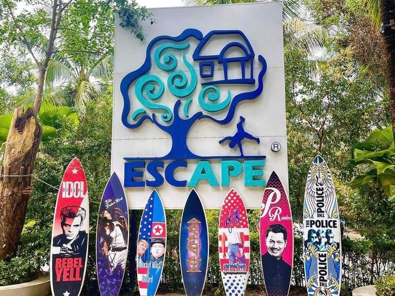
ESCAPE Penang
ESCAPE Penang is a thrilling three-in-one theme park that includes activities for visitors of all ages. The park features a water park with tube rides, wave pools, speed racers, kids pool, lazy rivers and water obstacle courses. Additionally, the adventure park boasts high ropes course, zip lines, slides, climbing tower and kid-friendly attractions.
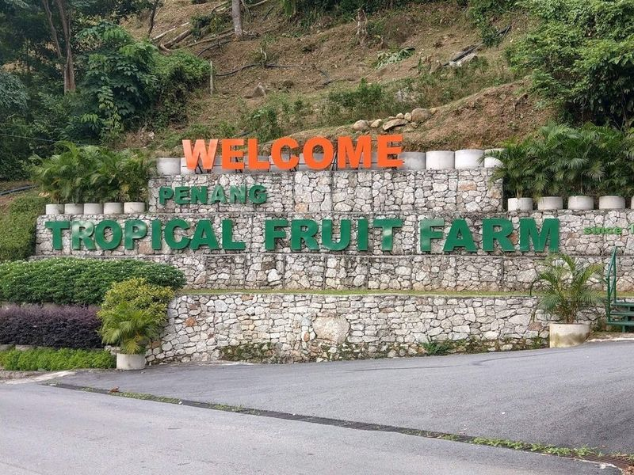
Penang Tropical Fruit Farm
Located in Balik Pulau, the Tropical Fruit Farm offers guided tours of its 25-acre orchards featuring a diverse range of tropical and subtropical fruit trees. Visitors can sample various fruits during the tour and even enjoy a night river cruise. Families with kids are encouraged to visit this farm for an educational and fun experience. The farm also offers fruit plates and juices as part of the tour, allowing visitors to taste freshly picked fruits.
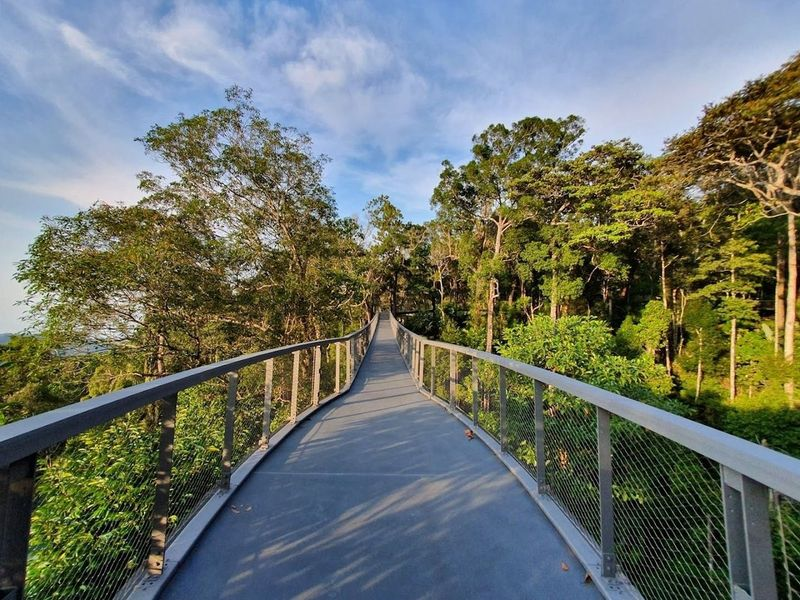
The Habitat Penang Hill
The Habitat Penang Hill is a must-visit attraction on the island, offering an educational and enjoyable experience in the pristine rainforest. Visitors can explore the lush tropical rainforest, learn about its flora and fauna, and take short nature trails. The highlight is the treetop and canopy walk that provides a unique perspective of the area.